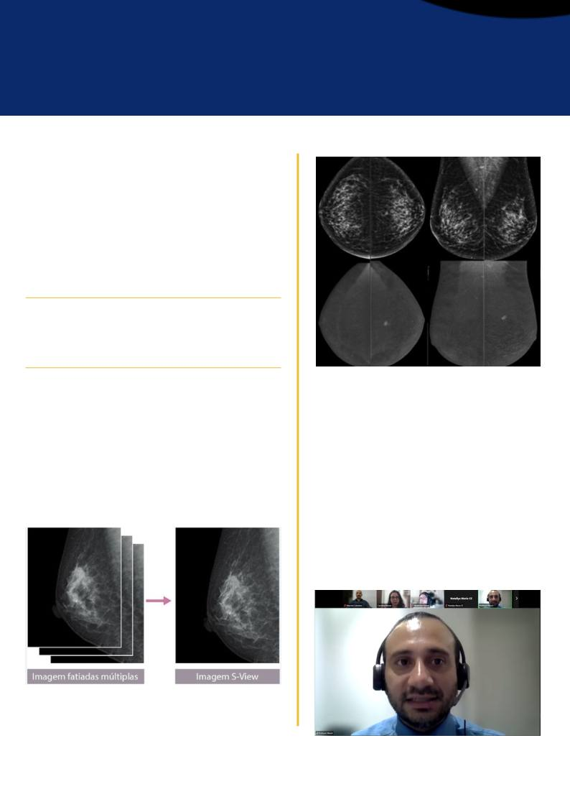

Legenda: À esquerda, são apresentadas múltiplas imagens fatiadas
(cortes) obtidas pela tomossíntese mamária digital, na incidência MLO
(médio-lateral oblíqua). Esses cortes permitem avaliar o tecido
mamário em diferentes planos, reduzindo o efeito da sobreposição das
estruturas. À direita, observa-se a imagem 2D sintetizada S-View,
reconstruída a partir dos dados adquiridos na tomossíntese. Ela
combina as informações dos múltiplos cortes para gerar uma imagem
bidimensional sintetizada, semelhante à mamografia digital 2D.
Legenda: Mamografia em incidência craniocaudal (CC):
superior, imagens 2D de baixa energia, evidenciando
mamas
densas
e
nódulo
irregular,
com
margens
microlobuladas, na união dos quadrantes superiores da
mama esquerda. Inferior, imagens recombinadas da
mamografia contrastada (CEM), demonstrando realce
heterogêneo do nódulo. Achado classificado como BI-
RADS 4 – suspeito.
A IA não substitui o profissional, mas
potencializa seus conhecimentos amplia as
possibilidades de análise e contribui para a
precisão e a qualidade da assistência.
A principal mensagem da palestra foi a de que a
IA não substitui o profissional, mas potencializa
seus conhecimentos, amplia as possibilidades de
análise e contribui para a precisão e a qualidade da
assistência.
A
atuação
humana
permanece
indispensável
para
garantir
uma
Radiologia
segura,
ética,
responsável,
humanizada
e
comprometida com a excelência no cuidado à
paciente.
Diante do cenário de constante evolução tecnológica,
torna-se
essencial
que
Técnicos
e
Tecnólogos
acompanhem os avanços científicos e tecnológicos,
buscando atualização e aprimoramento profissional. O
conhecimento permite utilizar as novas ferramentas com
segurança, senso crítico e responsabilidade, contribuindo
para exames de maior qualidade e para uma assistência
mais eficiente.
A palestra da professora Aparecida de Fátima também
abordou desafios relacionados à implementação da IA,
como capacitação contínua, responsabilidade profissional,
ética, segurança das informações e uso consciente dos
recursos tecnológicos. Nesse contexto, a tecnologia deve
ser empregada como ferramenta de suporte, sempre
associada
ao
conhecimento
técnico,
à
experiência
profissional e ao cuidado humanizado.
ALÉM DA IMAGEM · CORED-SP · CRTR-SP
19
A C O N T E C E U N O C R T R - S P
1º WORKSHOP
ONLINE - CORED
1º Workshop Online CORED-SP, realizado via Zoom em 5
de agosto de 2026. Na barra superior, membros da equipe
organizadora. Ao centro, Fabrício Nazzari, Presidente da
CORED-SP.